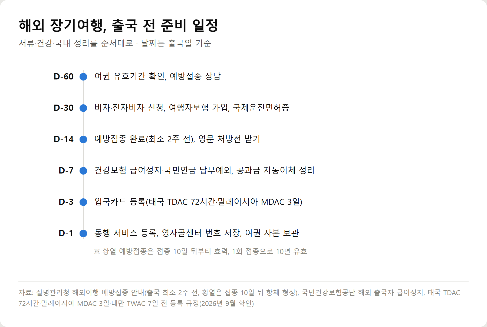
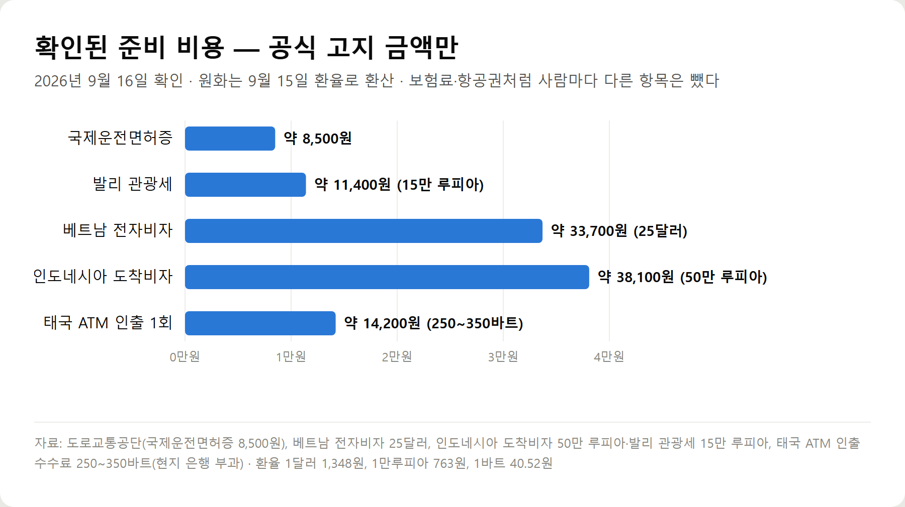

<meta charset="utf-8">
<title>해외 장기여행 준비 체크리스트 — 출국 60일 전부터 순서대로 — 나의 투자 그리고 행복한 여행</title>
<meta name="description" content="해외 장기여행·한달살기 준비를 출국 60일 전부터 순서대로 정리했습니다. 여권·비자·여행자보험·예방접종 기한, 건강보험 급여정지와 국민연금 납부예외, 태국 TDAC·말레이시아 MDAC 등 입국카드, 영사콜센터와 동행 서비스, 귀국 면세 한도까지 공식 기준으로 확인했습니다.">
<meta name="viewport" content="width=device-width, initial-scale=1">
<link rel="canonical" href="https://danielmoon82.github.io/moon/posts/trip-checklist-2026-09-16.html">
<link rel="preconnect" href="https://fonts.googleapis.com">
<link rel="preconnect" href="https://fonts.gstatic.com" crossorigin>
<link rel="stylesheet" href="https://fonts.googleapis.com/css2?family=Hahmlet:wght@400;600;800&family=IBM+Plex+Mono:wght@400;500&family=IBM+Plex+Sans+KR:wght@300;400;500;600&display=swap">

<style>
  :root{
    --paper:#F2EEE6;--surface:#FAF8F3;--surface-2:#E7E1D5;
    --ink:#191510;--ink-2:#4A4235;--ink-3:#7D7364;
    --line:#D6CEBF;--line-soft:#E4DDD0;--accent:#B06A15;--accent-bright:#C2761A;
    --up:#E5484D;--down:#3B82F6;
    --f-display:"Hahmlet",'Nanum Myeongjo',"Apple SD Gothic Neo",serif;
    --f-body:"IBM Plex Sans KR","Apple SD Gothic Neo","Malgun Gothic",sans-serif;
    --f-mono:"IBM Plex Mono","SFMono-Regular",Consolas,monospace;
    --pad:clamp(20px,5vw,64px);
  }
  @media (prefers-color-scheme:dark){
    :root:not([data-theme="light"]){
      --paper:#0B1120;--surface:#121A2C;--surface-2:#1A2439;
      --ink:#E9EEF7;--ink-2:#A9B5C9;--ink-3:#72809A;
      --line:#26314A;--line-soft:#1D2739;--accent:#E8A33D;--accent-bright:#F0B45C;
    }
  }
  *{box-sizing:border-box;}
  body{margin:0;background:var(--paper);color:var(--ink);font-family:var(--f-body);
    font-weight:300;font-size:1rem;line-height:1.75;-webkit-font-smoothing:antialiased;}
  a{color:inherit;}
  img{max-width:100%;height:auto;}
  .wrap{max-width:760px;margin:0 auto;padding-inline:var(--pad);}
  .nav{position:sticky;top:0;z-index:20;background:color-mix(in srgb,var(--paper) 88%,transparent);
    backdrop-filter:saturate(180%) blur(12px);border-bottom:1px solid var(--line);}
  .nav-in{display:flex;align-items:center;justify-content:space-between;height:58px;}
  .brand{font-family:var(--f-display);font-weight:600;font-size:1rem;letter-spacing:-.02em;text-decoration:none;}
  .back{font-family:var(--f-mono);font-size:.72rem;color:var(--ink-3);text-decoration:none;}
  .article{padding-block:clamp(40px,7vw,72px) clamp(56px,9vw,96px);}
  .eyebrow{font-family:var(--f-mono);font-size:.68rem;letter-spacing:.16em;text-transform:uppercase;
    color:var(--accent);margin:0 0 14px;}
  h1{font-family:var(--f-display);font-weight:800;font-size:clamp(1.6rem,4.4vw,2.3rem);
    line-height:1.3;letter-spacing:-.03em;margin:0 0 16px;}
  .byline{font-family:var(--f-mono);font-size:.72rem;color:var(--ink-3);
    padding-bottom:24px;border-bottom:1px solid var(--line);margin-bottom:32px;}
  h2{font-family:var(--f-display);font-weight:600;font-size:1.25rem;letter-spacing:-.02em;margin:42px 0 14px;}
  h3{font-family:var(--f-display);font-weight:600;font-size:1.05rem;letter-spacing:-.02em;
    margin:30px 0 10px;padding-top:14px;border-top:1px solid var(--line-soft);}
  h3 .code{font-family:var(--f-mono);font-size:.7rem;font-weight:400;color:var(--ink-3);margin-left:6px;}
  p{margin:0 0 18px;color:var(--ink-2);}
  ul.checks{margin:0 0 18px;padding-left:20px;color:var(--ink-2);}
  ul.checks li{margin-bottom:8px;font-size:.94rem;}
  table{width:100%;border-collapse:collapse;font-size:.88rem;margin-bottom:8px;}
  th{font-family:var(--f-mono);font-size:.66rem;letter-spacing:.06em;text-transform:uppercase;
    color:var(--ink-3);text-align:right;padding:8px 6px;border-bottom:1px solid var(--line);}
  th:first-child{text-align:left;}
  td{padding:10px 6px;border-bottom:1px solid var(--line-soft);color:var(--ink-2);}
  td.num{font-family:var(--f-mono);text-align:right;font-variant-numeric:tabular-nums;}
  td.up{color:var(--up);} td.down{color:var(--down);}
  .scroll{overflow-x:auto;}
  figure{margin:22px 0;}
  figure img{display:block;border-radius:3px;background:var(--surface-2);}
  figcaption{margin-top:8px;font-family:var(--f-mono);font-size:.68rem;color:var(--ink-3);text-align:center;}
  .note{margin-top:34px;padding:16px 18px;border-left:3px solid var(--accent);
    background:var(--surface);border-radius:0 3px 3px 0;}
  .note p{margin:0;font-size:.85rem;color:var(--ink-3);}
  .foot{border-top:1px solid var(--line);background:var(--surface);padding-block:30px 38px;}
  .foot p{margin:0;font-size:.8rem;color:var(--ink-3);}
</style>

<nav class="nav">
  <div class="wrap nav-in">
    <a class="brand" href="../index.html">나의 투자 그리고 행복한 여행</a>
    <a class="back" href="../index.html#stocks">← 시황으로</a>
  </div>
</nav>

<main class="wrap article">
  <p class="eyebrow">Market</p>
  <h1>해외 장기여행 준비 체크리스트 (2026년 9월) — 서류·건강·금융·국내 행정 정리</h1>
  <p class="byline">여행 · 2026-09-15 기준</p>

  <p>한 줄 요약: 예방접종 2주 전, 건강보험 급여정지 3개월 이상 체류, 입국카드는 태국 72시간·말레이시아 3일·대만 7일 전. 날짜가 걸린 항목부터 역순으로 처리하면 됩니다.</p>
  <p>외교부·질병관리청·국민건강보험공단·국민연금공단·도로교통공단·관세청 안내와 각국 입국 규정을 2026년 9월 16일에 확인해 정리한 기록입니다.</p>
  <h2>해외 장기여행 준비, 결론부터</h2>
  <ul class="checks">
    <li>날짜가 걸린 것부터 — 예방접종(2주 전), 비자·전자비자, 여권 유효기간, 보험</li>
    <li>국내 행정 — 건강보험 급여정지(3개월 이상 체류), 국민연금 납부예외, 공과금·우편물 정리</li>
    <li>입국 직전 — 태국 TDAC 72시간, 말레이시아 MDAC 3일, 대만 TWAC 7일 전 등록</li>
    <li>안전 — 동행 서비스 등록, 영사콜센터 02-3210-0404 저장(24시간·7개 언어 통역)</li>
    <li>귀국 — 1인 면세 한도 미화 800달러, 주류·담배·향수는 별도 기준</li>
  </ul>
  <figure><figcaption>해외 장기여행 출국 전 준비 일정 (출국일 기준, 2026년 9월 확인)</figcaption></figure>
  <h2>D-60 — 여권과 예방접종부터 확인</h2>
  <p>가장 먼저 여권을 꺼내 유효기간을 봅니다. 나라마다 입국 시 요구하는 잔여기간이 다르고, 베트남처럼 6개월 이상을 요구하는 곳이 많습니다. 재발급이 필요하면 이때 신청하세요. 수수료와 처리 기간은 외교부 여권안내에서 확인할 수 있습니다.</p>
  <p>예방접종은 준비를 2개월 전부터 시작하라고 질병관리청이 안내합니다. A형간염·장티푸스 같은 백신은 의료기관이나 보건소에서, 황열·콜레라는 국제공인 예방접종 지정기관에서 맞습니다.</p>
  <p>황열은 접종 10일 뒤부터 효력이 생기고 1회 접종으로 10년간 유효합니다. 유행 국가는 국제공인예방접종증명서를 요구할 수 있고, 없으면 입국이 막힐 수 있습니다.</p>
  <h2>D-30 — 비자·보험·국제운전면허</h2>
  <div style="overflow-x:auto"><table border="1" cellpadding="6" style="border-collapse:collapse;width:100%;font-size:14px;line-height:1.5"><thead><tr><th style="background:#f3f5f8">나라</th><th style="background:#f3f5f8">체류</th><th style="background:#f3f5f8">입국 전 할 일</th><th style="background:#f3f5f8">비용</th></tr></thead><tbody><tr><td>태국</td><td>무비자 90일</td><td>TDAC 전자입국카드(도착 72시간 전부터)</td><td>무료</td></tr><tr><td>베트남</td><td>무비자 45일</td><td>45일 초과 시 전자비자(90일)</td><td>전자비자 25달러</td></tr><tr><td>말레이시아</td><td>무비자 90일</td><td>MDAC 디지털 입국카드(도착 3일 전부터)</td><td>무료</td></tr><tr><td>대만</td><td>무비자 90일</td><td>TWAC 온라인 입국카드(도착 7일 전부터)</td><td>무료</td></tr><tr><td>일본</td><td>무비자 90일</td><td>Visit Japan Web(선택)</td><td>무료</td></tr><tr><td>조지아</td><td>무비자 1년</td><td>여행자보험 필수(최소 3만 라리 보장)</td><td>보험료 별도</td></tr><tr><td>인도네시아</td><td>도착비자 30일</td><td>발리는 관광세 별도 결제</td><td>비자 50만 루피아 + 관광세 15만 루피아</td></tr></tbody></table></div>
  <p>입국카드는 모두 무료입니다. 수수료를 받는 대행 사이트가 검색 상단에 자주 보이니 각국 공식 주소에서만 작성하세요.</p>
  <p>여행자보험은 기간을 실제 체류일에 맞춰 듭니다. 조지아처럼 보험 가입이 입국 요건인 나라도 있습니다. 보험료는 나이와 보장에 따라 차이가 커서, 보험다모아나 보험사 다이렉트에서 직접 조회하는 편이 정확합니다.</p>
  <p>운전 계획이 있다면 국제운전면허증도 이때 만듭니다. 유효기간은 발급일부터 1년, 수수료는 8,500원입니다. 여권·운전면허증·여권용 사진을 갖춰 운전면허시험장이나 경찰서에서 받거나, 안전운전 통합민원·정부24에서 온라인으로 신청할 수 있습니다.</p>
  <figure><figcaption>확인된 준비 비용 — 공식 고지 금액만 (2026년 9월 16일 기준, 환율 9월 15일)</figcaption></figure>
  <h2>D-14 — 예방접종 완료와 약 준비</h2>
  <p>예방접종은 출국 최소 2주 전에 끝내야 합니다. 말라리아 예방약은 전문의약품이라 처방이 필요하고, 최소 일주일 전부터 복용을 시작해야 합니다.</p>
  <p>장기 복용하는 약이 있다면 영문 처방전을 받아 두세요. 약품명·용량·환자명·의사 서명이 들어가야 하고, 약은 원래 포장 그대로 가져가는 편이 안전합니다.</p>
  <p>주의할 약도 있습니다. 마약류나 향정신성의약품에 해당하는 약을 가지고 나가려면 식품의약품안전처의 사전 승인이 필요합니다. 수면제나 일부 진통제처럼 국내에서 정상 처방받은 약도 나라에 따라 반입이 제한되니, 목적지 규정을 미리 확인하세요.</p>
  <h2>D-7 — 건강보험·국민연금 등 국내 행정</h2>
  <p>3개월 이상 해외에 머물 예정이면 국민건강보험 급여정지를 신청할 수 있습니다. 직장가입자가 업무 목적으로 국외에 체류하는 경우에는 1개월 이상이어도 보험료가 면제되는데, 국내에 거주하는 피부양자가 없어야 합니다.</p>
  <p>2026년 9월부터는 출국 전에 공단 홈페이지나 모바일 앱에서 '해외 출국자 급여정지/입국신고'로 직접 신청할 수 있습니다. 예전처럼 지사를 방문하거나 팩스를 보내지 않아도 됩니다.</p>
  <p>국민연금은 성격이 다릅니다. 유학이나 어학연수처럼 국내 소득이 없는 상태로 국외에 머무는 경우 납부예외를 신청할 수 있지만, 그 기간은 연금액을 계산하는 가입기간에 들어가지 않습니다. 해외이주 신고를 하지 않은 장기 체류자는 여전히 가입 대상입니다.</p>
  <ul class="checks">
    <li>공과금·통신비 — 자동이체 계좌 잔액 확인, 쓰지 않는 요금제는 일시정지</li>
    <li>우편물 — 장기간 쌓이면 빈집 표시가 된다. 이웃이나 가족에게 부탁</li>
    <li>카드 — 해외 사용 등록과 한도 확인, 유효기간이 체류 중 끝나지 않는지</li>
    <li>세금·보험료 — 체류 중 납부일이 오는 것들(재산세·자동차세 등)을 미리 정리</li>
  </ul>
  <h2>D-3 ~ D-1 — 입국카드와 안전 준비</h2>
  <p>입국카드는 나라별로 등록 가능한 시점이 다릅니다. 태국 TDAC는 도착 72시간 전부터, 말레이시아 MDAC는 3일 전부터, 대만 TWAC는 7일 전부터 작성합니다. 너무 일찍 열어 두면 등록이 안 되니 날짜를 맞춰 두세요.</p>
  <p>출국 전날에는 안전 장치를 걸어 둡니다. 외교부 해외안전여행 앱의 '동행'에 일정과 국내 비상연락처를 등록하면 여행지 안전정보를 알림으로 받고, 사고가 났을 때 등록한 연락처로 위치를 알릴 수 있습니다.</p>
  <p>영사안전콜센터 번호도 저장해 두세요. 02-3210-0404로 연중무휴 24시간 상담하고, 영어·중국어·일본어·베트남어·프랑스어·러시아어·스페인어 7개 언어 통역을 제공합니다. 무료전화 앱과 카카오톡 상담도 있습니다.</p>
  <ul class="checks">
    <li>여권 사본과 비자·보험증서를 종이 1부, 휴대폰 1부로 나눠 보관</li>
    <li>숙소 주소와 연락처를 현지어로 저장(택시·병원에서 쓴다)</li>
    <li>외교부 여행경보 단계 확인 — 방문 지역이 자제·제한 지역인지</li>
    <li>가족에게 일정과 숙소 공유</li>
  </ul>
  <h2>돈과 통신 — 한 달 이상이면 수수료가 쌓인다</h2>
  <p>장기 체류에서는 결제 수수료가 생각보다 큽니다. 태국은 해외 카드로 현금을 뽑을 때마다 현지 은행이 250~350바트(약 1만~1만4천원)를 뗍니다. 한 번에 넉넉히 뽑고, ATM이 원화로 결제할지 묻는 화면(DCC)에서는 반드시 현지 통화를 선택하세요.</p>
  <p>카드는 해외결제 수수료가 없는 카드나 충전식 외화카드를 준비하면 한 달 동안 차이가 쌓입니다. 현금은 한곳에 몰아 두지 말고 숙소와 지갑에 나눠 두세요.</p>
  <p>통신은 현지 유심이나 eSIM이 보통 쌉니다. Numbeo 기준 데이터 10GB 이상 요금제가 다낭은 약 8천원, 치앙마이는 약 1만8천원, 후쿠오카는 약 3만4천원 수준입니다. 공항에서 파는 여행자용 상품은 이보다 비싼 경우가 많습니다.</p>
  <h2>짐 — 한 달 이상이면 달라지는 것들</h2>
  <ul class="checks">
    <li>상비약 — 해열진통제·지사제·소화제·연고, 평소 먹는 약은 넉넉히</li>
    <li>전원 — 나라별 플러그 모양 확인(유럽형 C·F, 동남아는 혼용), 멀티탭 하나면 편하다</li>
    <li>옷 — 실내 에어컨이 강한 나라가 많아 얇은 겉옷 하나는 필수</li>
    <li>가방 — 큰 캐리어 하나보다 중형 + 작은 배낭이 이동에 유리</li>
    <li>서류 — 여권 사본, 증명사진 2매(현지 서류에 필요할 때가 있다)</li>
    <li>빨래 — 세제 소포장, 빨랫줄. 세탁기 없는 숙소면 코인 세탁 위치를 미리 확인</li>
  </ul>
  <h2>귀국 — 면세 한도와 자진신고</h2>
  <p>돌아올 때도 규정이 있습니다. 여행자 휴대품 기본 면세 한도는 1인 미화 800달러입니다.</p>
  <ul class="checks">
    <li>주류 — 전체 2L 이하, 총 400달러 이하</li>
    <li>담배 — 필터담배 200개비</li>
    <li>향수 — 100ml</li>
    <li>위 세 가지는 800달러 한도에 합산되지 않고 각각 따로 적용된다</li>
    <li>자진신고하면 관세의 30%를 감면받는다</li>
  </ul>
  <p>한 달 이상 머물며 산 물건은 생각보다 금방 한도를 넘습니다. 영수증을 모아 두면 신고할 때 편합니다.</p>
  <h2>해외 장기여행 준비 자주 묻는 질문</h2>
  <p>Q. 준비는 언제부터 시작해야 하나요?</p>
  <p>예방접종이 필요한 나라라면 2개월 전부터가 안전합니다. 질병관리청은 출국 최소 2주 전 접종을 권하고, 황열은 접종 10일 뒤부터 효력이 생깁니다.</p>
  <p>Q. 한 달만 나가는데 건강보험을 정지해야 하나요?</p>
  <p>급여정지 대상은 3개월 이상 국외 체류입니다. 한 달이면 해당하지 않고 보험료도 그대로 냅니다. 직장가입자가 업무 목적으로 나가는 경우에는 1개월 이상도 면제될 수 있습니다.</p>
  <p>Q. 장기여행 중 국민연금은 어떻게 되나요?</p>
  <p>국내 소득이 없는 상태로 국외에 머무는 경우 납부예외를 신청할 수 있습니다. 다만 그 기간은 가입기간에 들어가지 않아 나중에 받는 연금이 줄어들 수 있습니다. 해외이주 신고를 하지 않았다면 가입 자격은 유지됩니다.</p>
  <p>Q. 입국카드는 언제 작성하나요?</p>
  <p>태국 TDAC는 도착 72시간 전부터, 말레이시아 MDAC는 3일 전부터, 대만 TWAC는 7일 전부터입니다. 모두 무료이며 공식 사이트에서 작성합니다.</p>
  <p>Q. 처방약은 얼마나 가져갈 수 있나요?</p>
  <p>복용 기간에 맞춰 가져가되 영문 처방전을 함께 준비하세요. 마약류·향정신성의약품은 식약처 사전 승인이 필요하고, 나라에 따라 반입이 아예 막히는 성분도 있습니다.</p>
  <p>Q. 사고가 나면 어디에 연락하나요?</p>
  <p>영사안전콜센터 02-3210-0404가 24시간 운영됩니다. 무료전화 앱과 카카오톡 상담도 있고, 7개 언어 통역을 지원합니다. 출국 전 동행 서비스에 일정을 등록해 두면 도움이 빠릅니다.</p>
  <h2>정리하면</h2>
  <p>장기여행 준비는 물건이 아니라 날짜의 문제입니다. 예방접종 2주, 건강보험 3개월, 입국카드 3~7일처럼 정해진 기한부터 역순으로 채우면 출국 직전에 급한 일이 남지 않습니다.</p>
  <p>출국 전날 해야 할 일은 딱 두 가지로 줄일 수 있습니다. 동행 서비스에 일정을 등록하고, 영사콜센터 번호를 저장하는 것입니다.</p>
  <p><b>함께 보면 좋은 글</b></p><ul><li><a href="https://danielmoon82.github.io/moon/posts/overseas-month-200-2026-09-15.html">월 200만원으로 해외 한달살기 가능할까? 도시 TOP 10 생활비 비교</a></li></ul>
  <div class="note"><p>이 글은 외교부·질병관리청·국민건강보험공단·국민연금공단·도로교통공단·관세청 안내와 각국 입국 규정을 2026년 9월 16일에 확인해 정리한 일반 정보입니다. 규정은 자주 바뀌므로 출국 전 각 기관과 대사관 공지에서 다시 확인하세요. 의료·보험·세금 관련 판단은 해당 기관에 문의하시기 바랍니다.</p></div>
</main>

<footer class="foot">
  <div class="wrap"><p>나의 투자 그리고 행복한 여행 · 투자 판단의 참고 자료일 뿐, 매수·매도를 권유하지 않습니다.</p></div>
</footer>
